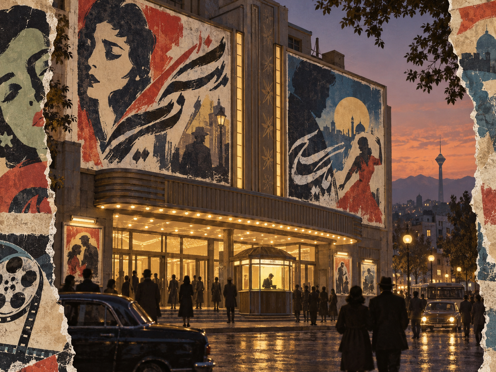

Poster
Asymmetrical montage and oversized display type foreground cinematic emotion and fast visual recognition.
15 LOCATIONS · 9 FILMS · ONE LIVING CITY
اطلس سینمای تهران؛ شهر را از قاب فیلم دوباره ببینید
Walk into the real streets, houses and palaces of Iranian cinema. Compare remembered frames with the city today.
ENTER THE ATLAS →
SIX VISUAL EXHIBITIONS
THE DISTRIBUTED MUSEUM
Every numbered point opens a location record. The map is coordinate-based and works offline; directions open the supplied map link when internet access is available.
THREE WAYS THROUGH TEHRAN
A plausible single-day journey from the northern garden mansions to the historic and civic centre.
THE COLLECTION
NINE SCREEN WORLDS
A LIVE MUSEUM WITHOUT WALLS
Tehran Cinema Atlas connects film frames, current photographs, visit information and geographical evidence. It is designed as both a planning tool at home and a companion during the visit. Your researched scene images can replace any image while keeping the same filenames.
DELIBERATE DESIGN
Every layout decision is tied to a visual tradition and a reading purpose. The themes alter order, density, hierarchy, navigation and image framing while keeping the content complete.
Asymmetrical montage and oversized display type foreground cinematic emotion and fast visual recognition.
Centred symmetry, woven borders and paired items turn the collection into a medallion-like field.
A vertical index and modular grid borrow from façades, plans and the contrast between Qajar and modern Tehran.
A bottom contact-sheet dock and horizontal archive privilege comparison between film evidence and field photography.
Dense columns, masthead hierarchy and monochrome images support scholarly scanning and metadata reading.
A proscenium hierarchy, central staging and ornamental frames present each location as a performed scene.
Rich: editorial, geographical, evidential and visit information. Systematic: shared fields across every location. Tailored: place-specific facts without forcing unrelated categories. Uniform: the same model enables search, maps and narratives.
ACADEMIC PURPOSE AND RIGHTS
This website explores typographic and layout styles for specialized tourist visits as an end-of-course project for the “Information Modeling and Web Technologies” course of the Master’s Degree in Digital Humanities and Digital Knowledge at the University of Bologna, under the supervision of Prof. Fabio Vitali.
The documents and images are presented for academic research, identification and comparison. Their publication is not intended as an alternative to or replacement for their original sources. Copyright and related rights remain with their original owners. The original theme artwork and typographic/layout choices were created for this 2026 project.